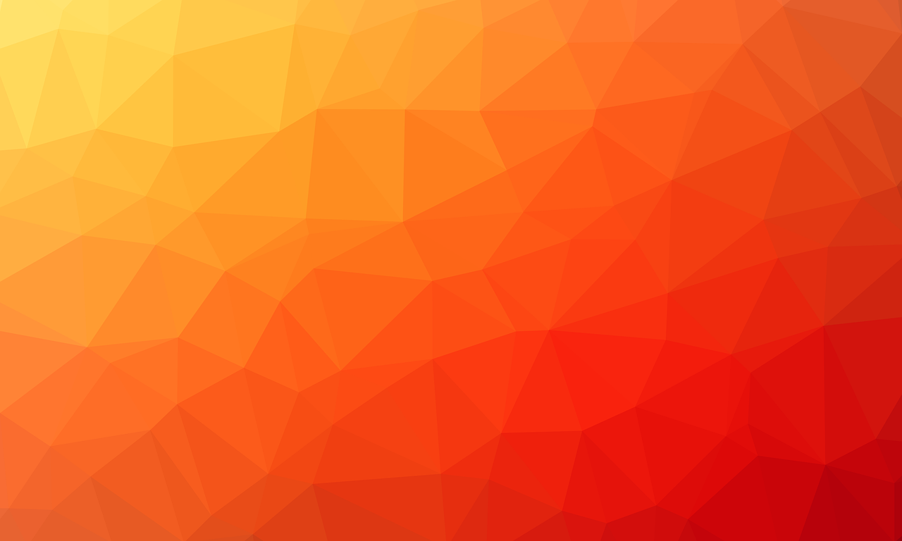

Flexbox, Flexbox, Flexbox. Am einfachsten lässt sich das Layout mit mehreren,
ineinander geschachtelten Flexboxen realisieren. Die Einteilung der Seite selbst,
die Menüzeile, die Suchzeile, die Textbereiche und der Fußbereich: Sie alle sind
Flexboxen mit unterschiedlichen Einstellungen. Vor Beginn der Aufgabe lohnt es
sich daher, die Beschreibung des Flexbox-Algorithmus auf
css-tricks.com
zu studieren und immer wieder zu konsultieren.
Denke zuerst vertikal, dann horizontal. Versuche also erst die übereinander gestapelten
Bereiche zu definieren und mit dem Flexbox-Algorithmus zu positionieren. Das Elternelement
muss hierfür die CSS-Anweisungen display: flex und flex-direction: column
sowie weitere Anweisungen zur Ausrichtung ihrer Inhalte besitzen. Anschließend mache die
Bereiche selbst zu Flexboxen und definiere damit die horizontale Ausrichtung ihrer Inhalte.
Ein guter Trick für die bunten Farbstreifen oben und unten ist, einfach dem
<html>-Element einen Farberlauf zu geben und die Dicke der Streifen
als Padding zu definieren. Damit der Hauptinhalt den Farbverlauf überdeckt, müssen zusätzlich
der Flexbox-Algorithmus aktiviert und für das <body>-Element eine
Hintergrundfarbe gesetzt werden:
html {
background: rgb(221,145,17);
background: linear-gradient(
90deg,
rgba(221,145,17,1) 0%,
rgba(255,9,28,1) 45%,
rgba(250,0,255,1) 100%
);
min-height: 100%;
padding-top: 0.6em;
padding-bottom: 0.6em;
box-sizing: border-box;
display: flex;
flex-direction: column;
}
body {
flex-grow: 1;
background-color: white;
}
Um die CSS-Anweisungen für Farbverläufe zu generieren, gibt es diverse Onlinetools wie
https://cssgradient.io. Damit wurde
auch der eben beschriebene Farbverlauf erzeugt, welcher der Vorlage recht nahe kommen sollte.
Als Hintergrundbild für das Jumbotron (großer bunter Bereich mit dem Eye-Catcher-Text)
kann das in der Vorlage enthaltene Bild
jumbotron-hintergrund.png
verwendet werden. Die Farbgebung ist ähnlich wie im Original. Allerdings handelt es sich um ein
frei verfügbares Bild
(Quelle),
dessen Verwendung keine Urheberrechte verletzt. 🐒
Ersatzbild für das Jumbotron:

Bild anklicken für eine größere Version